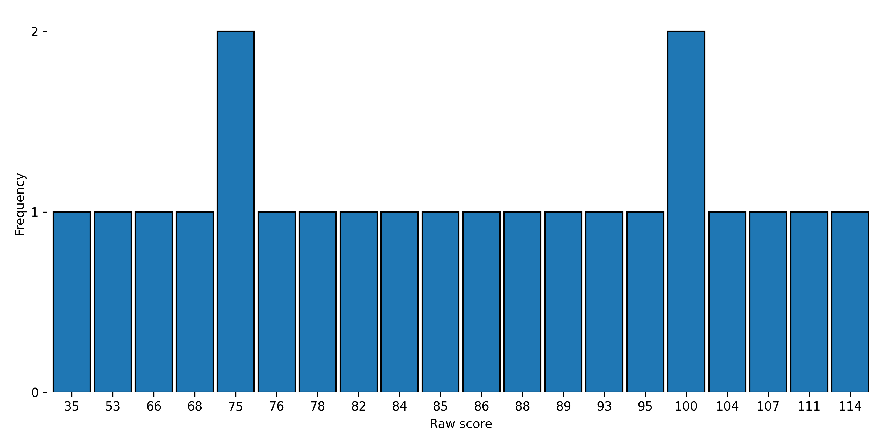

General
-
Number of people authenticated
51
-
Number of banned accounts (email addresses)
13
-
Number of candidates who have finished the NAIT
23
-
Unfinished or abandoned submissions
3
-
Number of candidates who have finished the NAIT-ES
4
-
Unfinished or abandoned submissions
7
-
Number of candidates who have finished the NOACT
7
-
Unfinished or abandoned submissions
10
-
Number of candidates who have finished the NOFRAT
3
-
Unfinished or abandoned submissions
12
-
Number of candidates who have finished the OVAT33
5
-
Unfinished or abandoned submissions
6
-
Number of candidates who have finished SAITO
4
-
Number of candidates who have completed all OCS tests
2
Last update: 11 January 2026
NAIT Statistics
|
Sample Data
|
| Completed test sessions (N) |
23 |
| Lowest raw score |
35 |
| Highest raw score |
114 |
| Range |
80 |
| Resolution |
12.5 |
Central Tendency and Dispersion
|
| Mean raw score (± 95% CI) |
85.78 ± 8.29 |
| Median raw score |
86 |
| Raw score mode |
75 |
| Raw score standard deviation |
18.74 |
| Quartile deviation |
12.25 |
| Raw score standard error of measurement |
3.31 |
Distribution Shape
|
| Skewness |
-0.78 |
| Excess Kurtosis |
0.9 |
Reliability
|
| McDonald's omega |
0.9424 |
| Cronbach's alpha |
0.9688 |
| Split Half Reliability Index |
0.9520 |
| Spearman–Brown corrected |
0.9754 |
Difficulty
|
| Sample-dependent hardness |
0.28 |
| Sample-independent hardness |
0.42 |
| Overall Test Complexity |
0.41 |
Candidates
|
| Youngest candidate (years) |
17 |
| Oldest candidate (years) |
75 |
| Mean age (years) |
36.6 |
| Median age (years) |
33.0 |
| Age standard deviation (years) |
18.4 |
| Percentage of males |
95.65 |
| Percentage of females |
0.0 |
| Percentage classified as unknown/other sex |
4.35 |
Candidates by Country (listed only if more than 1)
|
| United States of America |
2 |
| China |
2 |
| Italy |
2 |
| Japan |
2 |
g factor
|
| Estimated g-loading |
0.87 |
| Number of tests used for the g-loading estimation |
16 |
NAIT raw score histogram:

Correlations between NAIT and other tests:
Correlations are computed between the raw score on the NAIT and the raw scores on other tests, except in the case of standardized tests (e.g., WAIS), where correlations are computed between the raw NAIT score and the standardized IQ score. Values are displayed only if the number of score pairs is bigger than 2.
| Test Name |
Spearman ρ |
Pearson r |
Pairs |
| NAIT Numerical Subtest | 0.973 | 0.961 | 23 |
| NAIT Verbal Subtest | 0.901 | 0.927 | 23 |
| NAIT Abstract Subtest | 0.753 | 0.850 | 23 |
| NAIT Logical Subtest | 0.738 | 0.811 | 23 |
| NAIT Spatial Subtest | 0.712 | 0.781 | 23 |
| NOACT Verbal Subtest | 0.883 | 0.884 | 7 |
| NOACT | 0.873 | 0.823 | 7 |
| NOACT Numerical Subtest | 0.829 | 0.729 | 7 |
| NOACT Logical Subtest | 0.730 | 0.651 | 7 |
| NOACT Abstract Subtest | 0.512 | 0.534 | 7 |
| SAT 36 | 0.975 | 0.722 | 5 |
| Einplex | 1.000 | 0.921 | 4 |
| VTPR 26 | 1.000 | 0.980 | 4 |
| CLM 39 | 1.000 | 0.853 | 4 |
| Wechsler Adult Intelligence Scale (aggregate) | 0.800 | 0.961 | 4 |
| Simtollect | 0.800 | 0.974 | 4 |
| NAIT-ES | -0.200 | 0.055 | 4 |
| World Intelligence Test | -0.400 | -0.564 | 4 |
| MCST 32 | 1.000 | 1.000 | 3 |
| LSHR Light | 1.000 | 1.000 | 3 |
| Numerus | 1.000 | 0.976 | 3 |
| MVA 28 | 1.000 | 1.000 | 3 |
| NIT-Form 1 | 0.500 | 0.870 | 3 |
| LSHR | 0.500 | 0.977 | 3 |
| Mathema | -0.866 | -0.795 | 3 |
Quality matrix (Ivec's method):
Last update: 15 December 2025
| Test or subtest |
Number of items |
Good items |
Average Items |
Suspicious items |
Bad items |
Unsolved items |
Overall quality (%) |
130-150 IQ range quality (%) |
140-160 IQ range quality (%) |
150-170 IQ range quality (%) |
| NAIT | 120 | 105 | 11 | 0 | 1 | 3 | 89.4 | 85.5 | 79.5 | 74.5 |
| NAIT Abstract Subtest | 27 | 23 | 2 | 0 | 1 | 1 | 89.5 | 95.7 | 82.6 | 67.4 |
| NAIT Logical Subtest | 9 | 8 | 1 | 0 | 0 | 0 | 92.0 | 89.5 | 84.2 | 76.7 |
| NAIT Numerical Subtest | 45 | 40 | 4 | 0 | 0 | 1 | 89.1 | 86.9 | 82.9 | 81.2 |
| NAIT Spatial Subtest | 13 | 9 | 3 | 0 | 0 | 1 | 79.9 | 90.7 | 81.2 | 71.4 |
| NAIT Verbal Subtest | 26 | 25 | 1 | 0 | 0 | 0 | 93.3 | 92.5 | 84.3 | 79.5 |
Correlations (r) matrix between NAIT subtests
| |
Abstract | Numerical | Verbal | Spatial | Logical |
| Abstract | 1 | 0.730 | 0.691 | 0.728 | 0.605 |
| Numerical | 0.730 | 1 | 0.865 | 0.649 | 0.716 |
| Verbal | 0.691 | 0.865 | 1 | 0.641 | 0.835 |
| Spatial | 0.728 | 0.649 | 0.641 | 1 | 0.510 |
| Logical | 0.605 | 0.716 | 0.835 | 0.510 | 1 |
NAIT subtests g-loadings (PCA)
| Verbal subtest | 0.931 |
| Numerical subtest | 0.914 |
| Abstract subtest | 0.860 |
| Logical subtest | 0.844 |
| Spatial subtest | 0.803 |